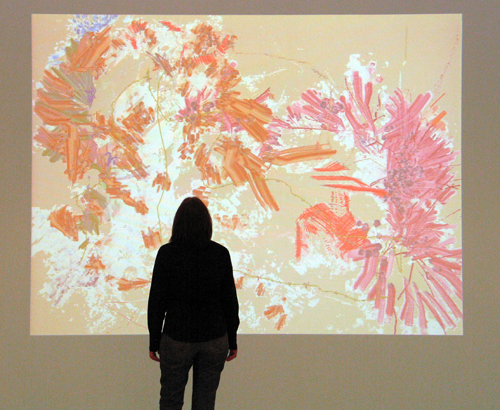
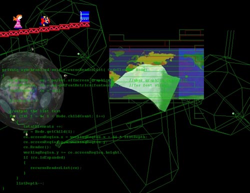
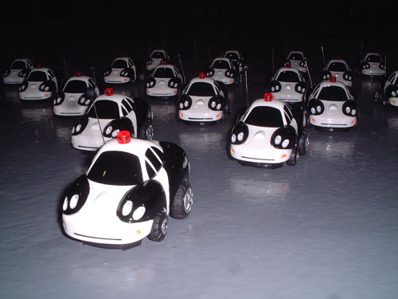
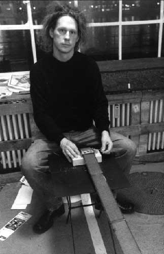
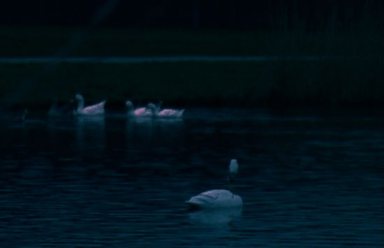
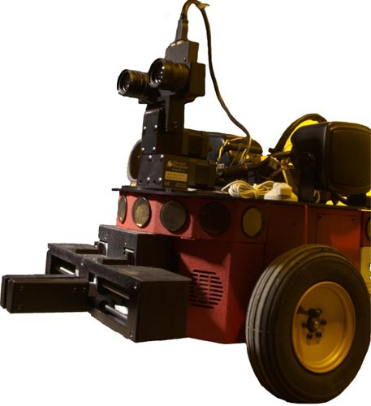

|
| |
We are
pleased
to present:
three
evening talks with new media artists
fall 2005
::::::::::::::::::::::::::::::::::::::::::::::::::::::::::::::::::::::::::::::
please join
us! free admission
Rm
313, 163 William Street, Pace University, NYC
co-directors Jillian Mcdonald + Francis T Marchese digitalgallery@pace.edu
:: click for printable pdf
::::::::::::::::::::::::::::::::::::::::::::::::::::::::::::::::::::::::::::::
the lineup
6pm.
tuesday oct 25 :: camille
utterback + john klima
6pm. thursday nov 10 :: jonah
brucker-cohen + art clay (switzerland)
6pm. tuesday nov 29 :: natalie
jeremijenko (artist) + paul benjamin (computer scientist)
::::::::::::::::::::::::::::::::::::::::::::::::::::::::::::::::::::::::::::::
other
upcoming events
oct 18 - nov 8 :: jody zellen "trigger".
site-specific installation
opening
6 - 8pm, tuesday oct 18
nov
15 - dec 16 ::
"synthesis + distribution: experiments in collaboration"
joint
exhibition with other Pace galleries, curated by will pappenheimer, ron janovich
+
merjin van der heijden
opening
6 - 8pm, tuesday nov 15
::::::::::::::::::::::::::::::::::::::::::::::::::::::::::::::::::::::::::::::
camille
utterback
links::
Artist's
Site

image:
Untitled 5
bio :: Camille Utterback is a pioneering artist and programmer in the field of interactive video installation. In addition to an extensive international exhibit history, recent awards include a Transmediale International Media Art Festival Award (2005), and a Rockefeller Foundation New Media Fellowship (2002). Utterback received a US patent for the video tracking system she developed as a research fellow at New York University (2004). Utterback has a BA in Art from Williams College, and a Masters degree from The Interactive Telecommunications Program at New York University’s Tisch School of the Arts. She lives and works in San Francisco.
statement
::
Camille will discuss her interactive video installations which create playful,
physical interaction between participants. Works will include 'Text Rain' (1999
with Romy Achituv), 'Liquid Time' (2001), and a number of pieces in the 'External
Measures Series' (2001 - 2005) including 'Untitled 6', which she has just completed
for a show at the Beall Center at UC Irvine. She will discuss how her ideas
and techniques have evolved as she has worked with the medium for the past 6
years. She will also focus her current explorations of painterly dynamic systems
which respond to human gesture and movement.
john
klima
links::
Artist's Site

image:
Collage
statement::
John
Klima employs a variety of technologies to produce artwork from electronics
and computer hardware and software. Consistently connecting the virtual to the
real, Klima builds large scale electro-mechanical installations driven by 3d
game software he programs from scratch. The virtual computer imagery mirrors
and extends the potential and agency of the physical components to produce cohesive
worlds that are both humorous and sinister.
In 2003 he focused on his long-time fascination with model railroading to create
his first HO scale railroad piece, titled simply "Train." Controlled
via cell phones, viewers guide the trains around the track, picking up passengers
along the way. The passengers are familiar characters from well known films.
When two or more characters are on board, they begin to have a dynamically generated
conversation, overheard on the cell phone. Exhibited in December 2003 at Postmasters
Gallery in New York, "Train" was shown in April 2005 at the DeCordova
Museum in Boston, and in December became part of the permanent collection of
the Museo Extremeño e Iberoamericano de Arte Contemporáneo in
Badajoz, Spain.
bio::
Klima
has exhibited extensively in museums and galleries in the U.S., Europe, and
Asia. His exhibitions include BitStreams at the Whitney Museum of American Art
as well as the 2002 Whitney Biennial. He has also exhibited at Eyebeam, The
New Museum of Contemporary Art, PS.1 and The Brooklyn Museum of Art. His international
exhibitions include The Museum for Communication in Bern, Switzerland, the NTT
InterCommunication Center in Tokyo, Japan, The Daejeon Municipal Museum in Korea,
and numerous international festivals. Selections from his bibliography include
the New York Times, the New Yorker, Art Forum, Flash Art, and Business Week.
Klima is currently a research scientist in the Mathematics department at New
York University, and adjunct Professor of Digital Media at the Rhode Island
School of Design. John Klima is represented by Postmasters in New York, and
Bank Gallery in Los Angeles.
jonah
brucker-cohen
links::
projects + work
/ personal
site + blog

image: Police State
statement:: Jonah will discuss his work in the theme of "Deconstructing Networks" in both physical and online instantiations. He will discuss his projects that attempt to challenge and subvert accepted notions of network interaction from software manipulation and rule-based systems to translating virtual processes and conventions into the physical world. Some projects he will discuss include BumpList, an email community for the determined, Alerting Infrastructure!, a website hit counter that destroys a building, PoliceState a fleet of radio controlled policecars who's movements are dictated by keywords sniffed on a local network, and SimpleTEXT a performance that is controlled by participants through texting messages from their mobile phones.
bio::
Jonah Brucker-Cohen is a researcher, artist, and Ph.D. candidate in the Disruptive
Design Team of the Networking and Telecommunications Research Group (NTRG),
Trinity College Dublin. He also worked as a Research Fellow in the Human Connectedness
Group at Media Lab Europe in Dublin, Ireland. He is co-founder of the Dublin
Art and Technology Association (DATA Group) and a recipient of the ARANEUM Prize
sponsored by the Spanish Ministry of Art, Science and Technology and Fundacioin
ARCO. His writing has appeared in numerous international publications including
Wired Magazine, Rhizome.org, and GIZMODO and his work has been shown at events
such as DEAF (03,04), UBICOMP (02,03,04), CHI (04) Transmediale (02,04), ISEA
(02,04), Institute of Contemporary Art in London (ICA-04), Whitney Museum of
American Art's ArtPort (03), Ars Electronica (02,04), and the ZKM Museum of
Contemporary Art in Karlsruhe(04-5).
art
clay ::

statement:: Le Marriage will be performed with a guest performer on November 5th at the opening of "Synthesis and Distribution: Experiments in Collaboration" at the Peter Fingestin Gallery, Pace University. Further works, presented as short film clips, will be shown as important examples of the collaborative processes between varied fields of knowledge, and between two or more genre. Particular attention will be given in the lecture to the sonic art work GoingPublik for distributed ensemble. This work is characteristic of a working relationship between the Arts and the Sciences which not only results in hybrid art forms but also brings about hybrid areas of knowledge. Other works to be discussed are Le Marriage, LoveGas, Suréance, GoingPublik, and Spinoza is(s)t…
bio:: Art Clay was born in New York, and lives in Basel, Switzerland. He has worked in Music, Video & performance, specializing in the performance of self-created works with the use of intermedia. He has had appearances at international festivals, on radio and television in Europe, USA and Japan. He has written works for newly-invented instruments of his own design and for traditional acoustic and electro-acoustic instruments. Instrument designs include: “Air Bow”, a virtual string instrument; “Mirrorum”, an optical sound generator; and “Spaceball”, a controller for both sound and image. Together with Jürg Gutknecht, he directs the “Digital Art Weeks” Program held at the ETH in Zurich.
natalie
jeremijenko
links::
UCSD faculty
website

image:
ooz
statement::
An
important part of Jeremijenko's artistic strategy is to enable public discourse
through access to accurate information about scientific claims. While she has
proposed and/or realized several projects that promote this type of populist
access, her large-scale public artwork One Tree is probably the best example
of how she achieves this goal. One Tree is not one tree, but 1,000 genetically
identical microcultured paradox Vlach clones grown under identical conditions.
This information environment has several components. Several arts and educational
institutions in the San Francisco Bay Area have sponsored the planting of these
trees in pairs in public places throughout the area. During this long-term project,
the trees will render visible the assumptions embedded in public discourse about
cloning technologies and provide a public platform for ongoing discussions around
genetic engineering among Bay Area residents. more
here
bio:: Natalie Jeremijenko is a new media artist who works at the intersection of contemporary art, science, and engineering. Her work takes the form of large-scale public art works, tangible media installations, single channel tapes, and critical writing. It investigates the theme of the transformative potential of new technologies - particularly information technologies. Specific issues addressed in her work include information politics, the examination and development of new modes of particulation in the production of knowledge, tangible media, and distributed (or ubiquitous) computing elements. She has recently held positions of Lecturer Convertible in the Department of Mechanical Engineering at Yale; Consultant to the Advanced Computer Graphics Center/Media Research Lab, Department of Computer Science, at NYU; and Distinguished Visiting Critic in the Department of Art, Virginia Commonwealth University. more here
paul
benjamin
links::
robotics lab

bio::
Dr. Benjamin earned his doctorate in computer science from New York University
in 1985. He worked for six years at Philips Laboratories before entering academia.
Currently, he is professor of computer science and director of the Robotics
Lab at Pace University. His research focuses on applying semigroup theory and
algebraic linguistics to robotics, problem solving and intelligent agent architectures.

 Fine Arts
Department
Fine Arts
Department